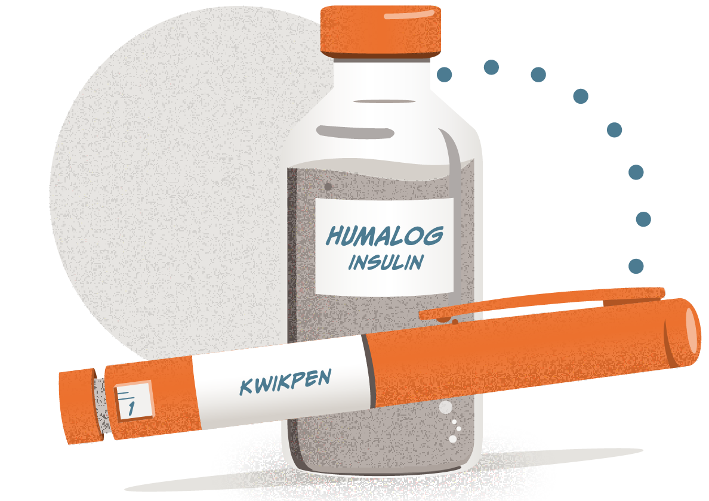
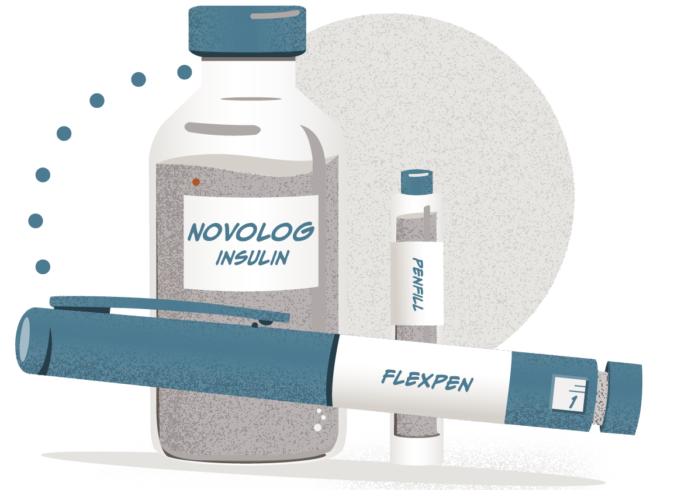
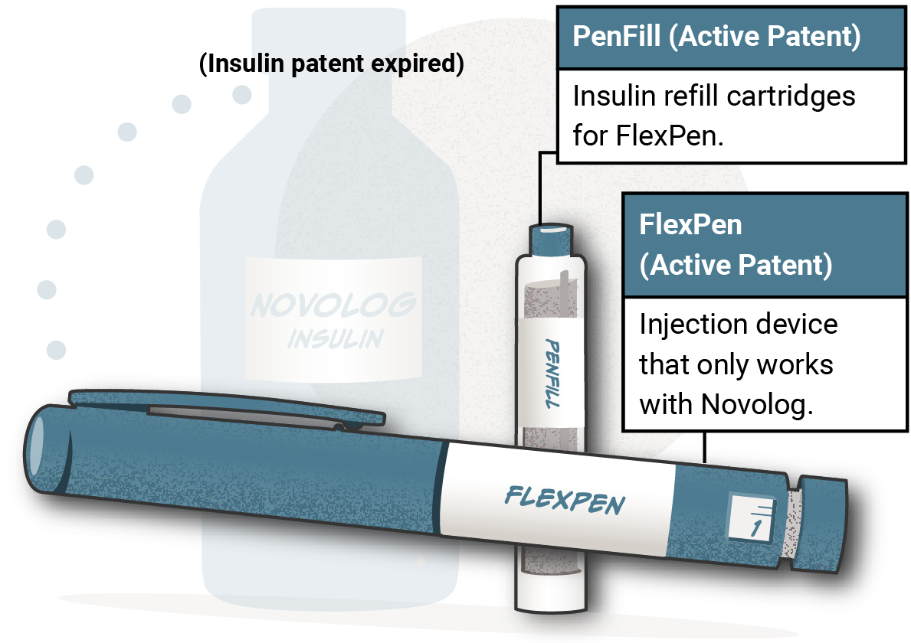

 
Through a combination of patents on compounds, formulation, and injection devices, insulin manufacturers are able to maintain market share and price:
Example: Humalog and its KwikPen

Example: NovoLog and its FlexPen
 Close